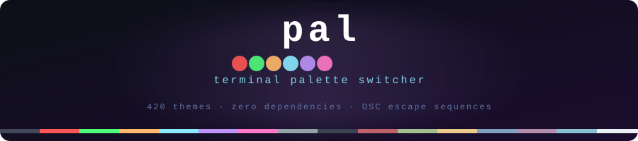

Switch your terminal's color palette instantly. 420 themes compiled into a single static binary — no config, no runtime deps.
//go:embed. One binary, nothing else needed.pal random. Each invocation picks a different one from 420.printf one-liner for .bashrc — no binary needed at startup.# macOS — Homebrew $ brew install binRick/tap/pal # Linux — pre-built static binary $ curl -fsSL https://github.com/binRick/pal/releases/latest/download/pal-linux-amd64 -o pal $ chmod +x pal && sudo mv pal /usr/local/bin/ # apply a palette $ pal dracula-dark $ pal random Applied: rose-pine-dark
More options: RPM, Windows, build from source →